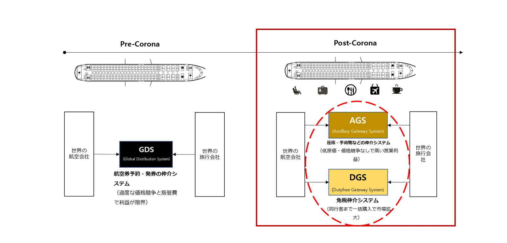

ひとことで言うと
オールウィンエアは、付帯サービスを売りたい企業（供給元）と付帯サービスを売れる企業（販売先）をひとつの連携でつなぎ、その間の運用すべてを担う会社です。
供給元
- 航空会社（座席・手荷物・機内食・優先手荷物・ゴルフパック）
- 旅行付帯サービス事業者（eSIM、送迎、空港サービス、免税など）
オールウィンエア AGS
- 航空会社・NDC APIとの連携、標準変換
- 販売先ごとの表示・価格管理
- 購入画面の提供、統合決済
- 顧客CS、精算、保守
- AI座席レコメンド（PNRベース）
販売先
- 旅行会社・OTA
- 航空会社の自社チャネル
- 旅行・コマース・決済プラットフォーム
→ 旅行者は販売先の画面の中で、航空券と付帯サービスをまとめて購入します。
主要な数字
70〜90%旅行会社が販売する航空券の比率（航空会社のタイプ別）
1,095億ドル世界の航空付帯サービス市場（2019年、IdeaWorks）
7社現在連携している韓国の航空会社
13社現在提携している旅行会社・OTA

ビジネスモデルを6つに分けると
よくあるご質問
- オールウィンエアのビジネスモデルは？
- 航空会社・付帯サービスの供給元と旅行会社・OTAの販売先をひとつの連携でつなぐB2B付帯サービスゲートウェイ（AGS）です。連携、購入画面、決済、CS、精算、保守をオールウィンエアが担い、販売が発生すると供給元と販売先の双方が収益を得ます。
- 一般のお客様に直接販売していますか？
- いいえ。オールウィンエアはB2B企業で、提携販売先の予約画面の中で旅行者に付帯サービスを提供しています。
- どのような企業が提携に向いていますか？
- 付帯サービスの販売チャネルを広げたい航空会社・付帯サービス事業者、航空券以外の収益をつくりたい旅行会社・OTA・旅行プラットフォームです。韓国の航空付帯サービスを扱いたい日本など海外の企業も歓迎します。
オールウィンエアとの連携を始めましょう
航空会社・付帯サービス提供事業者も、旅行会社・OTA・旅行プラットフォームも、ひとつの連携から始められます。連携方式とスケジュールは提携先の環境に合わせてご相談します。日本語・英語でのお問い合わせも可能です。
提携窓口メール（海外からはメールを推奨）partnership@allwin.co.kr
代表電話（韓国国内・平日 09:00〜18:00 KST）+82 1522-2284